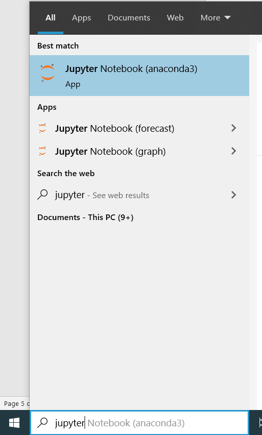
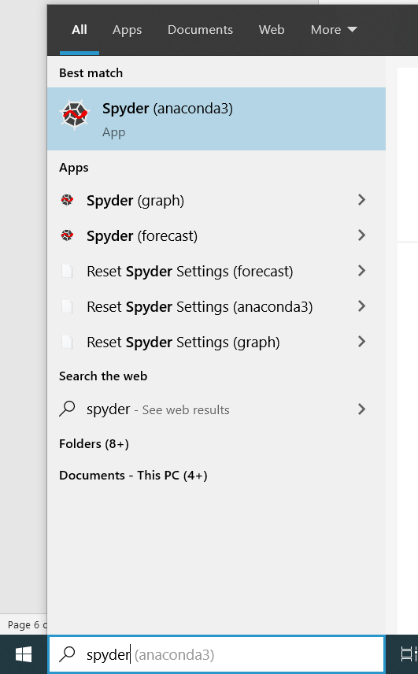

Running an IDE
Section 1: Running Python Integrated Development Environment (IDE)
With Anaconda installed, two Python IDE – Jupyter Notebook and Spyder is automatically installed as well. We strongly recommend beginners to start writing Python codes using Jupyter Notebook.
1.1: Launch Jupyter Notebook
To launch Jupyter Notebook, type “jupyter” in your PC’s search box and click on “Jupyter Notebook”

Jupyter offers two versions of user interface, i.e. JupyterLab and Jupyter notebook.
Personally, I highly recommend using JupyterLab. Steps to launch each version are as follow:
1.1.1: Running JupyterLab
Open a browser and type in the link - http://localhost:8888/lab
1.1.2: Running Jupyter notebook (classic version)
Open a browser and type in the link - http://localhost:8888/tree
1.2: Launch Spyder
To launch Spyder, type “spyder” in your PC’s search box and click on “Spyder” 
Section 2: Install R Studio and Visual Studio Code using Anaconda
It is also possible to download R Studio and Visual Studio Code using Anaconda.
-
Launch Anaconda Navigator
-
Look for R Studio and Visual Studio Code and click Install
-
Afte the installation, click on Launch to launch the application
Last Updated: 7 September 2020
Anaconda Version: Anaconda Individual Edition 2020.07
Python Version: 3.8